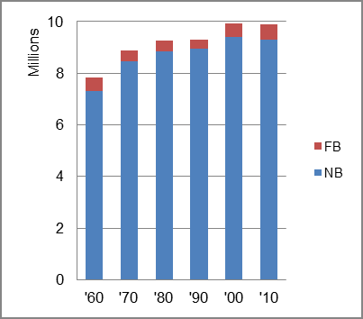

The foreign-born (FB) population increased from 529,624 in 1960 to 587,747 in 2010. That was an increase of 11.0 percent. The foreign-born share changed from 6.8 percent to 5.9 percent.
The share of the overall population that was native-born (NB) increased by 27.5 percent.
Michigan: Population 1960-2010 
The first chart below shows the three population change factors for three periods adjusted for annual average amounts. Natural change (B-D) was the principal factor adding population in all periods.
The second chart shows the same data but with an adjustment to reflect births to immigrants shifted to NIM. In it, NIM became the principal factor in adding population in the most recent period
Michigan: Sources of Population Change 1990-2013 Michigan: Sources of Population Change (Adjusted) 1990-2013
B-D NDM NIM B-D NDM NIM 90-'99 84.0% neg. 16.0% 90-'99 63.2% neg. 36.8% 00-'09 70.0% neg. 30.0% 00-'09 52.3% neg. 47.7% 10-'13 59.3% neg. 40.7% 10-'13 34.9% neg. 65.1%